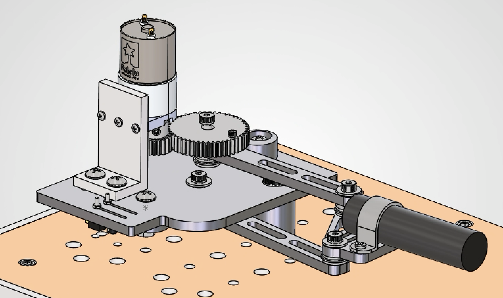
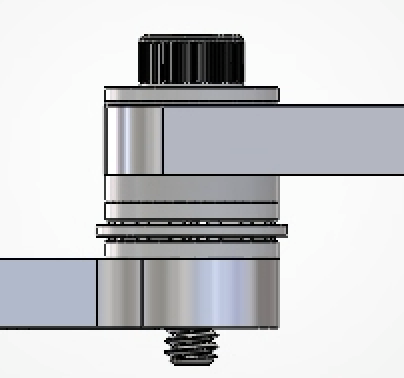

Plants vs. Zombies
September - Present 2026
Design
Challenge
Buildling 4-bar linkage system that replicates a Peashooter Plant. Our mechanism needed to:
- Detect the target furthest from the proximity sensors
- Position an LED over one of four photosensors using a DC motor
- Use closed-loop position control to aim accurately
- Send targets backward before they hit the front limit switch
Key Skills
SolidWorks · Engineering Drawings · Manual Machining · Soldering · Arduino · Control Systems · Electromechanical Integration
Personal
Contributions
CAD
Responsible for full CAD assembly of the linkage, including fasteners, washers, joint design, and transmission.


Dynamic Analysis
Conducted a dynamic simulation of the 4-bar linkage to generate a power consumption graph to ensure that the required power at the input joint is below the maximal output power of the motor used.


Engineering Drawings
A short note on which parts you drew and how they were manufactured.